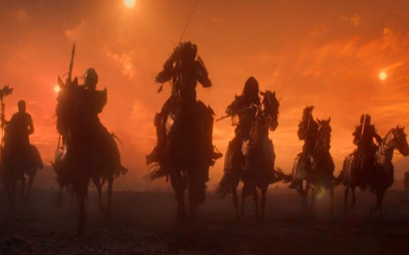

A Caçada Selvagem em The Witcher: Uma Enigmática Jornada de Caça
The Witcher, uma série que conquistou milhões de fãs em todo o mundo, apresenta um vasto universo repleto de mistérios e criaturas fantásticas. Entre essas criaturas, uma que desperta curiosidade é a Caçada Selvagem, um grupo misterioso e lendário que desempenha um papel crucial na história.
A Caçada Selvagem é um grupo de cavaleiros espectralmente belos, liderado pelo temido Rei da Caçada Selvagem, conhecido como O Rei dos Lobos. Eles vagam pelo mundo, montados em cavalos negros e caçando almas para aumentar suas fileiras. Essa caçada noturna está sempre presente nas lendas e nos contos, despertando tanto temor quanto fascínio.
Uma curiosidade intrigante sobre a Caçada Selvagem é o motivo de suas aparições e sua ligação com o protagonista, Geralt de Rivia. Ao longo da série, Geralt se encontra em várias ocasiões com a Caçada Selvagem, e sua relação com o grupo é complexa e cheia de mistério.
Acredita-se que a Caçada Selvagem está em busca da alma de Geralt, o que leva a encontros intensos e confrontos emocionantes. Essas interações revelam mais sobre o passado e o destino de Geralt, além de oferecer pistas sobre a verdadeira natureza e motivações da Caçada Selvagem.
Outra curiosidade fascinante é a conexão da Caçada Selvagem com eventos sobrenaturais e mitologia. Na série, a Caçada é retratada como uma entidade que transcende os limites entre o mundo dos vivos e dos mortos, adicionando um toque de magia e mistério à narrativa.
A representação visual da Caçada Selvagem é igualmente impressionante, com seu aspecto sombrio e imponente. As cenas envolvendo a Caçada Selvagem apresentam efeitos visuais incríveis, capturando a essência aterradora e sedutora desses cavaleiros sinistros.
Quem Somos
Somos uma equipe apaixonada por séries, trazendo resenhas envolventes, notícias atualizadas e curiosidades dos bastidores. Nosso objetivo é fornecer aos fãs um espaço dedicado a explorar e compartilhar o fascinante mundo das séries, oferecendo insights, análises e entretenimento para todos os amantes da tela pequena
Últimas notícias


Últimas Resenhas


Curiosidades